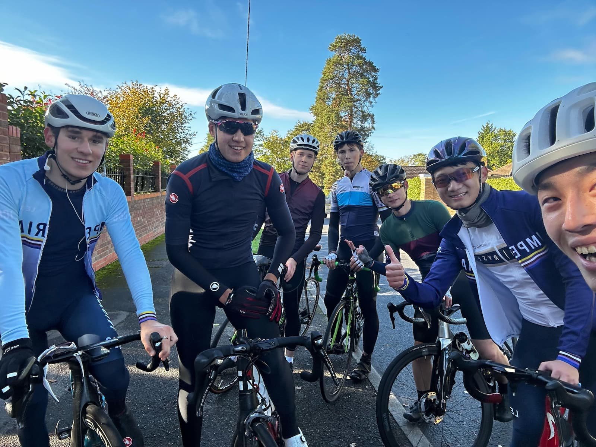

Imperial College · London
Imperial
College
Cycling
Club
Student-run cycling club. Road, trails, bike parks. All levels welcome — just show up and ride.
Join the Club
Student-run cycling club. Road, trails, bike parks. All levels welcome — just show up and ride.
Join the ClubWeekly group rides from city streets to Surrey hills. Casual to competitive — all paces welcome.
Learn moreLocal trails, singletrack, bike parks, and full-day adventures. No experience necessary.
Learn moreBikepacking, fixed gear, commuting, socials. If it has two wheels, there's a place for you here.
Learn more
ICCC is a student-led community at Imperial College London. Whether you're chasing a podium or your first group ride, there's a place for you. Powered by the Student Union.
Join through the Imperial College Union. Membership gets you access to every ride, race, event, and social.